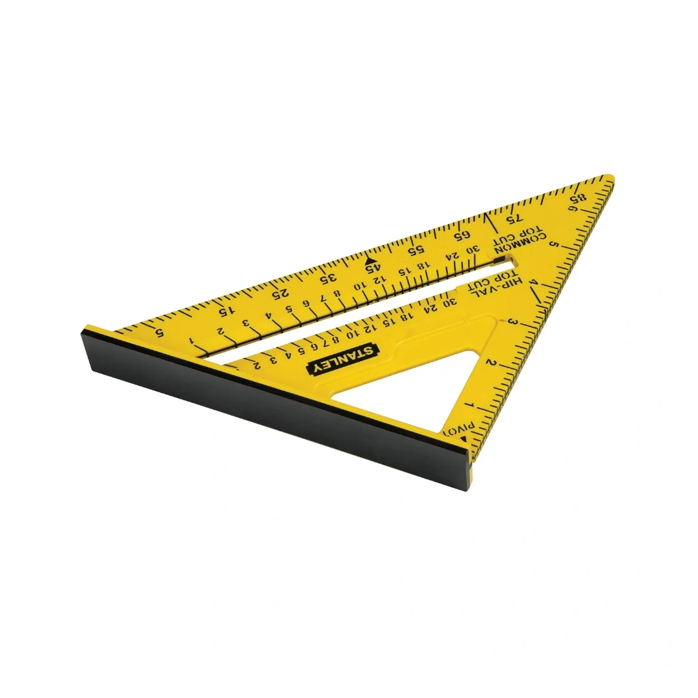
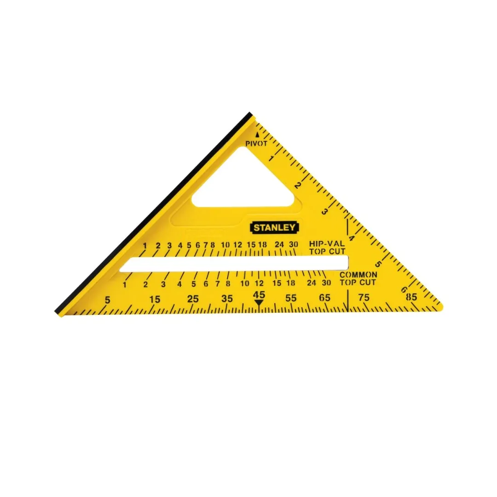
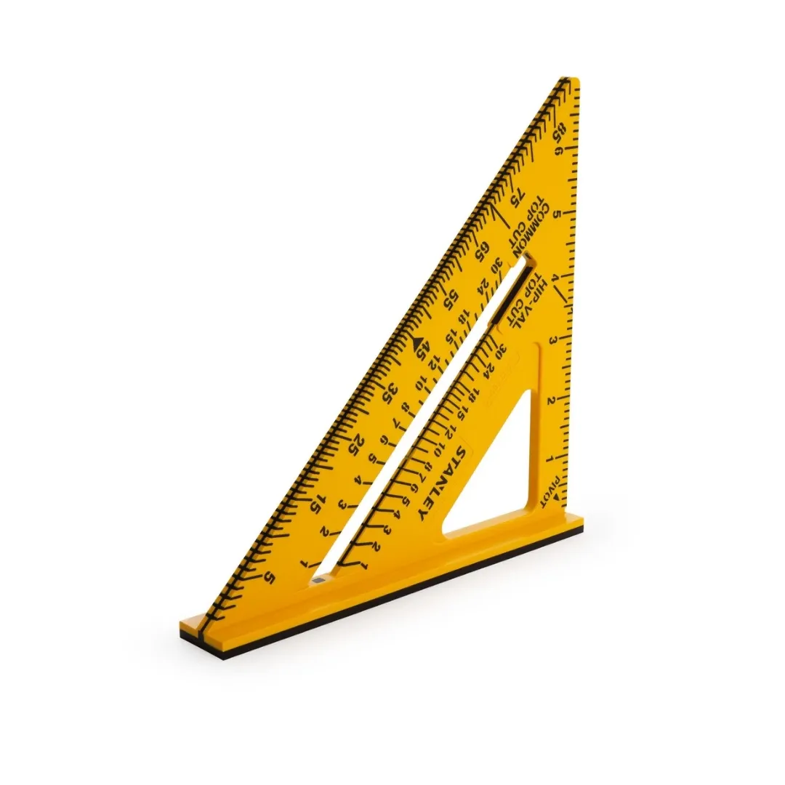

Stanley | Speed Square / Plastic / 150mm
STHT46010



The STANLEY 150mm Dual Color Square is a versatile, durable tool designed to provide precise measurements and enhanced usability for both professionals and DIY enthusiasts.
Key Features:
- Molded-In Contrasting Graduations: Clear, easy-to-read measurements for improved accuracy and efficiency.
- Wrapping Graduations: Ensure precise results, even on angled or curved surfaces.
- Extra-Thick ABS Plastic Body: Stands up to heavy-duty use, making it ideal for demanding work environments.
- Large Base Design: Offers a strong grip on materials, enhancing stability during tasks.
- Dual Functionality: Use as a reliable measuring tool or a sturdy saw guide for cutting tasks.
Whether you’re measuring, marking, or cutting, the STANLEY 150mm Dual Color Square combines precision, durability, and convenience in one essential tool.
Specifications
| Rating | Semi Industrial |
| Squares Size [Metric] | 150 mm |
Includes